Already decided (v1.018): Star's date picker replaces the browser's date box everywhere. In Color Belt that's four fields: Add / Edit event's testing date and closing date, the private day (Add private testing, Change day or time, Move to private testing) and Edit payment's date paid. One question at the bottom. (Preview screenshots, fake data; the “after” is drawn on the real page, nothing is built yet.)
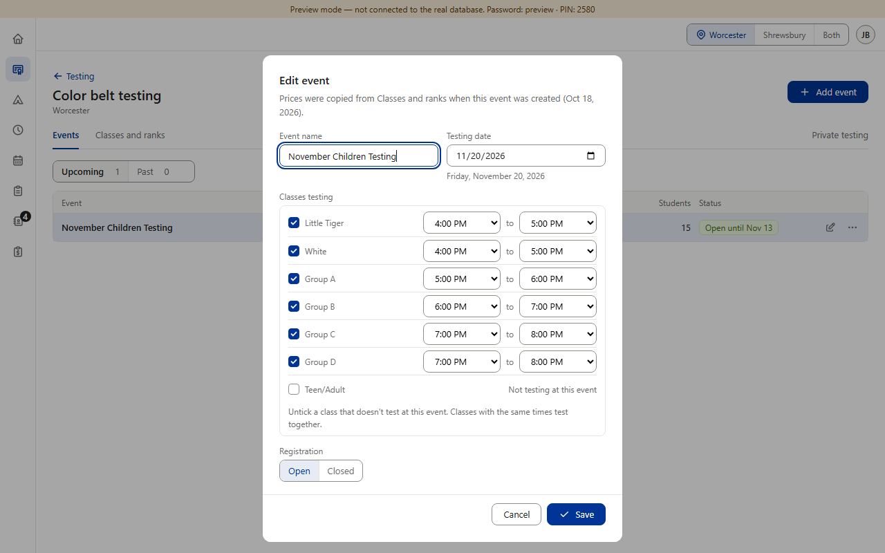
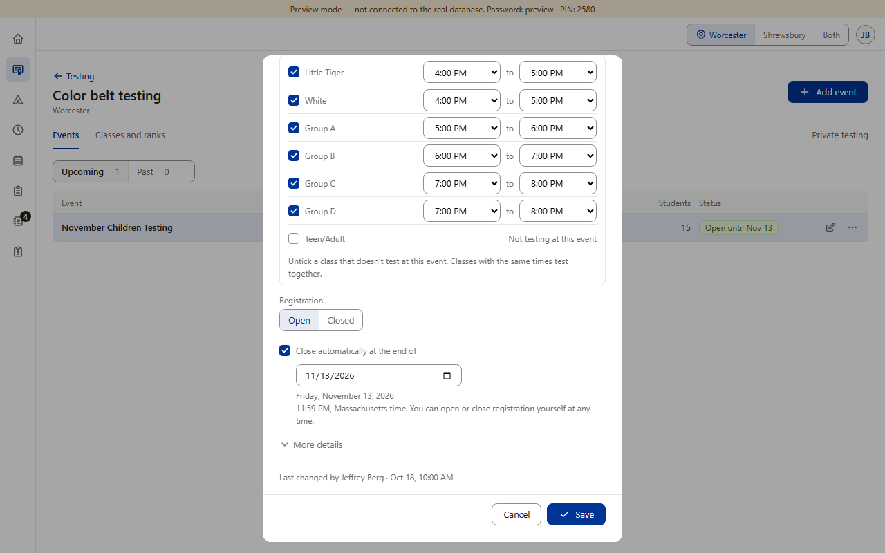
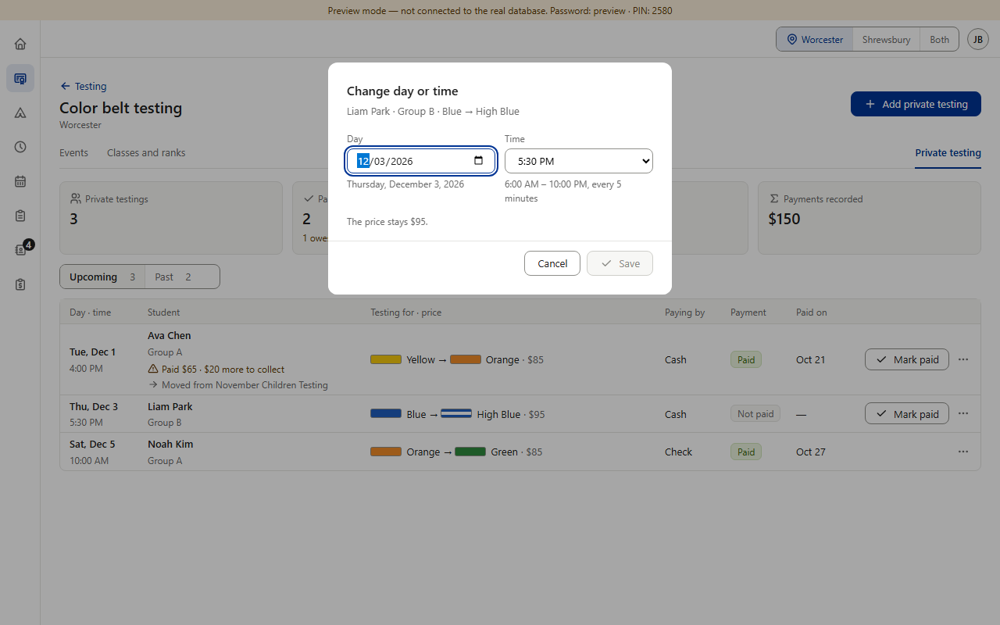
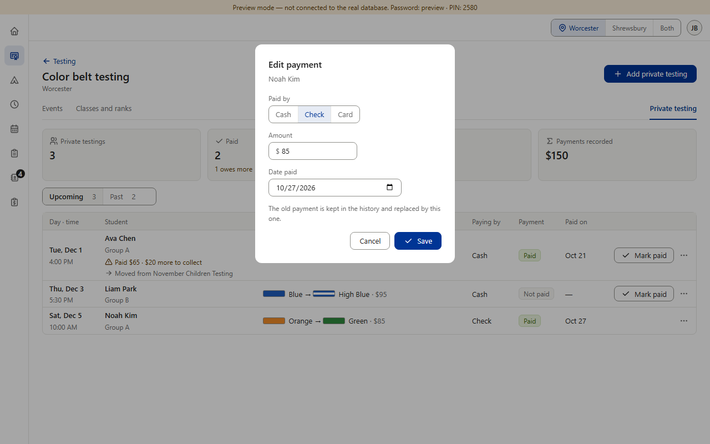
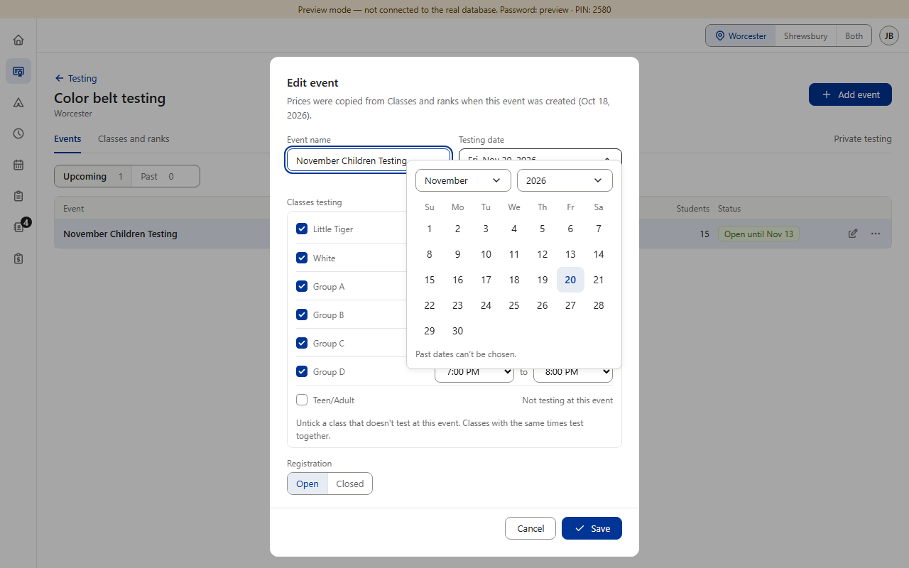
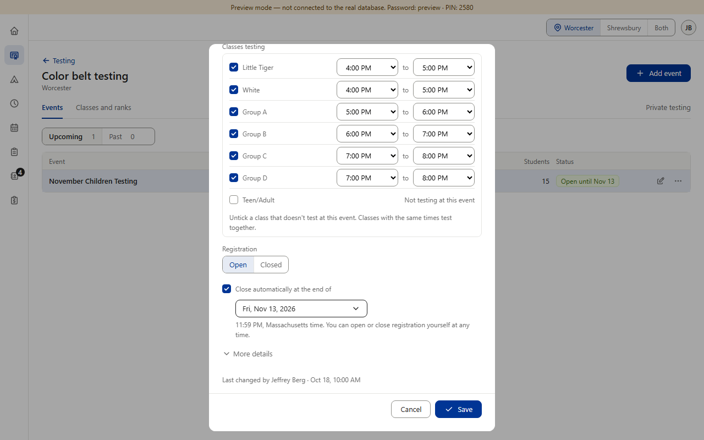
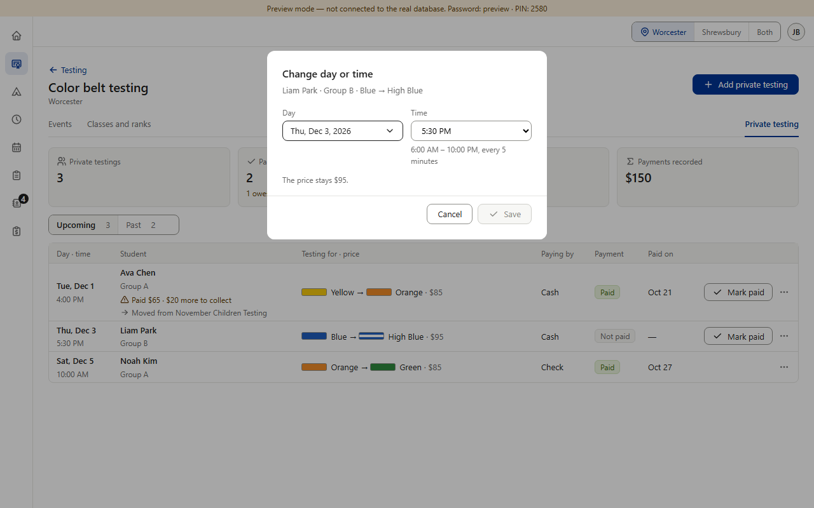
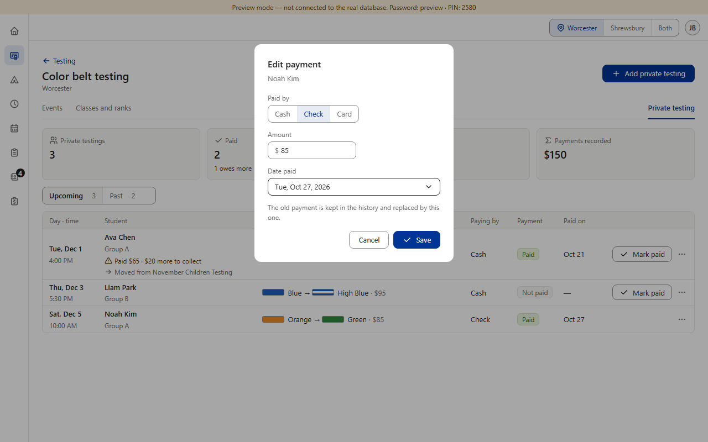
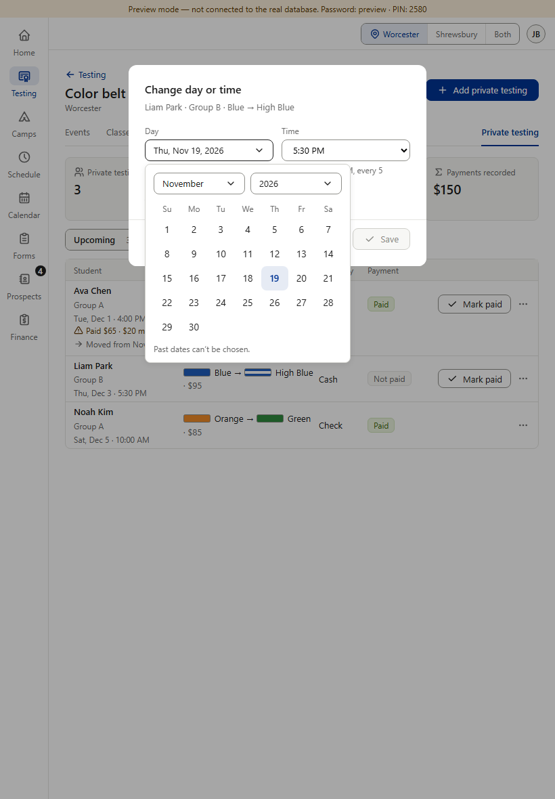
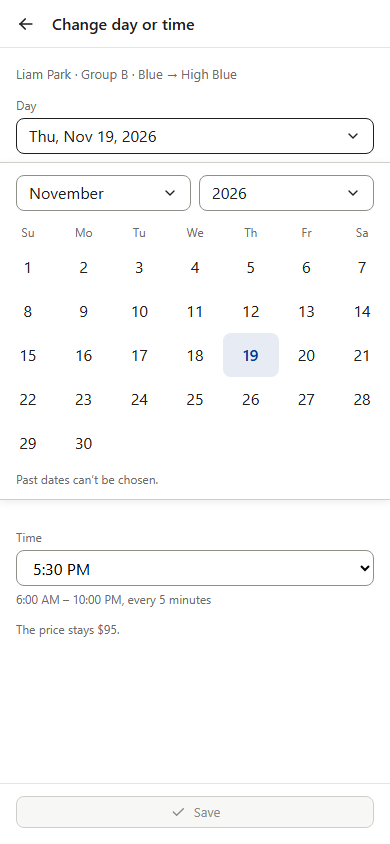
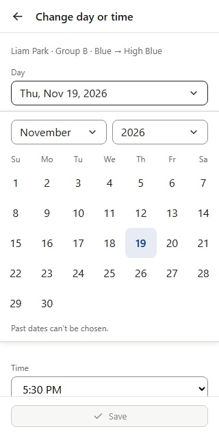